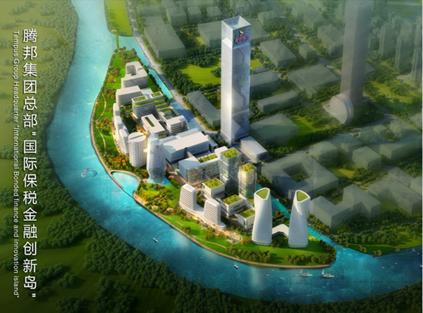

您现在所在的位置是：走进腾邦 > 集团简介
腾邦集团有限公司（简称“腾邦集团”），1998年创立于中国深圳特区，是伴随高速发展的中国经济而迅速成长起来的“500强”全球化跨国集团。腾邦专注运营“现代服务全产业生态链”，年营业额超过2000亿人民币，全球分支机构超过500个，员工超过3.5万人，如今，腾邦的“大旅游、大健康、价值链、互联网金融、名酒交易、跨境电商”等专业服务已广泛应用于中国境内主要大中型城市及香港、台湾、新加坡、马来西亚、日本、韩国、法国、澳大利亚、中东、欧洲等170个国家和地区。腾邦旗下两家上市公司，分别是在中国A股上市的“腾邦国际（300178.SZ）”和香港主板上市的“腾邦控股（06880.HK）”，品牌和市场影响力广泛。腾邦热心慈善公益，发起成立中国商业服务首家行业慈善基金会“腾邦慈善基金会”，先后捐赠数十亿元人民币建设医院、敬老院、学校等公益设施，支持中国慈善公益事业，籍此腾邦集团被深圳市政府评为十大“最具爱心企业”。
